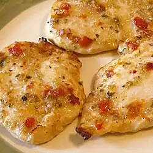

Italian chicken breast recipe

Dish description
One of the easiest Italian chicken recipes: Boneless breasts marinated in Italian-style
salad dressing, then baked. One of the simplest and most delicious chicken recipes!
Ingredients
- 1 (16 ounce) bottle Italian-style salad dressing
- 6 skinless, boneless chicken breast halves
Steps
- Pour salad dressing into a large resealable plastic bag. Add chicken breasts, seal bag,
and shake to coat. Marinate in the refrigerator for at least 1 hour or overnight
(the longer you marinate, the more flavor the chicken will absorb).
- Preheat the oven to 350 degrees F (175 degrees C).
- Remove chicken from marinade and place in a lightly greased 9x13-inch baking dish;
discard remaining marinade.
- Bake in the preheated oven, turning chicken occasionally, until cooked through and juices
run clear, about 1 hour. An instant-read thermometer inserted into the center should read at
least 165 degrees F (74 degrees C).
Nutrition facts
Per Serving: 344 calories; protein 27.5g; carbohydrates 7.7g; fat 22.4g;
cholesterol 68.4mg; sodium 1296.1mg.
Observation: The nutrition data for this recipe includes information for the
full amount of the marinade ingredients. Depending on marinating time, ingredients, cooking
method, etc., the actual amount of the marinade consumed will vary.